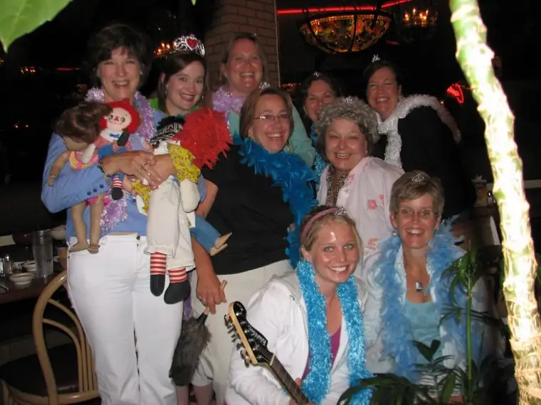

{kind=link}

All I knew was that the same wonderfully whacky friends who “bra-ed” my yard yesterday were picking me up this evening to go to the movie, Mama Mia. I didn’t know about the blinking tiara I would have to wear, or the rainbow-colored feather boa, or that they would come sporting their own tiny crowns and feathers. I did know we’d probably end up dancing in the theater at the end of the musical movie, and I knew we were going to meet for appetizers afterwards. I didn’t know a skit would be presented in my honor at the restaurant, nor had I expected the gifts and cards. What a grand entrace to midlife! And, get this, upon walking into the restaurant, we were mistaken for a bachelorette party. I think the whole group enjoyed that little surprise gift!The tiara has been removed now and the bras (see yesterday’s entry) soon will be stuffed into a plastic bag or box and stored in our garage until the next landmark birthday comes along. Our husbands will get a much-needed break from our girlfriend outings, which have been ongoing due to more than one birthday for several weeks now. If someone out there needs to borrow a hoard of bras in the coming months, let me know, I’ve got plenty!
I’ll conclude with the words from the this evening’s skit. The staff and patrons at both the theater and restaurant were very gracious, by the way, and seemed to be getting a kick out of our jovial moods, costumes and singing. And as one of my fellow cohorts said, “You only turn 40 once.” Well, in my case, more like twice. Thanks doubly, dear women pals!
Ode to Roxane on the occasion of her 40th birthday
Happy birthday our friend Roxane
Now you’re turning 40
And even tho you’re 40
You still are looking sporty (Refrain, repeat after each verse)
Grew up on the rez in the middle of nowhere
Everyone knew me as Roxane Beauclair
Moorhead State College — soon I was fallin’
in love with a rock-n-roll hottie, Troy Salonen
Five kids followed one by one,
So much work but loads of fun!
Writing and singing make me feel whole
Housework just doesn’t feed my soul!
When I find myself in a quandary
I go to my hideaway down by the laundry
Writing my memoir, 500 pages
Hoping it soon pays off in good wages!
I love my blog, Peace Garden Mama
I can write it in my support hose and pajamas!
I get by with faith and my friends
A decade of diapers — and now it’s Depends!
P is for Peace Garden, L is for Lordy
R is for Roxane and F is for Forty!
We’re with you in good times and through the hard knocks.
Happy birthday dear friend. 40 ROX!